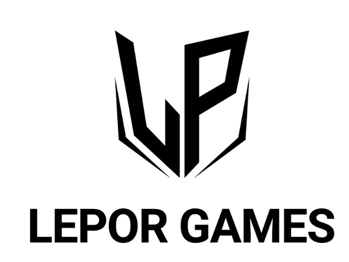
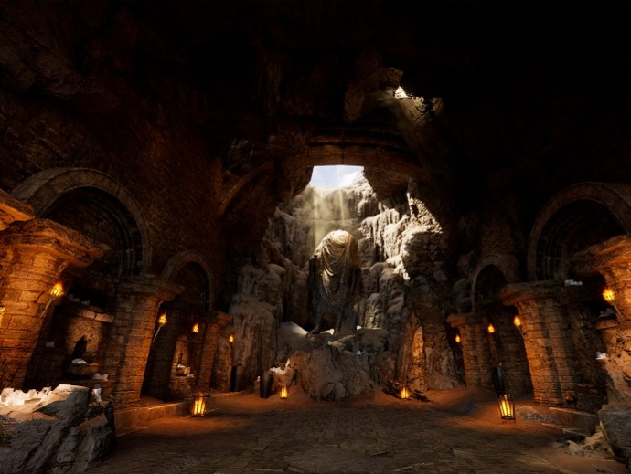
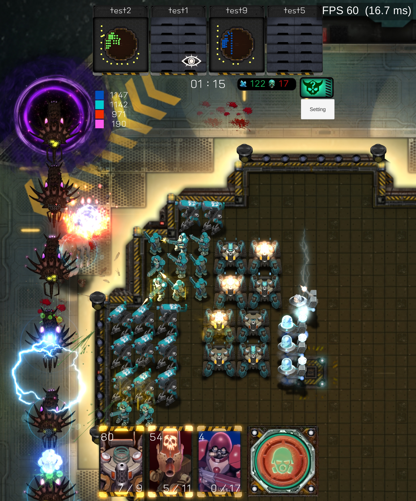
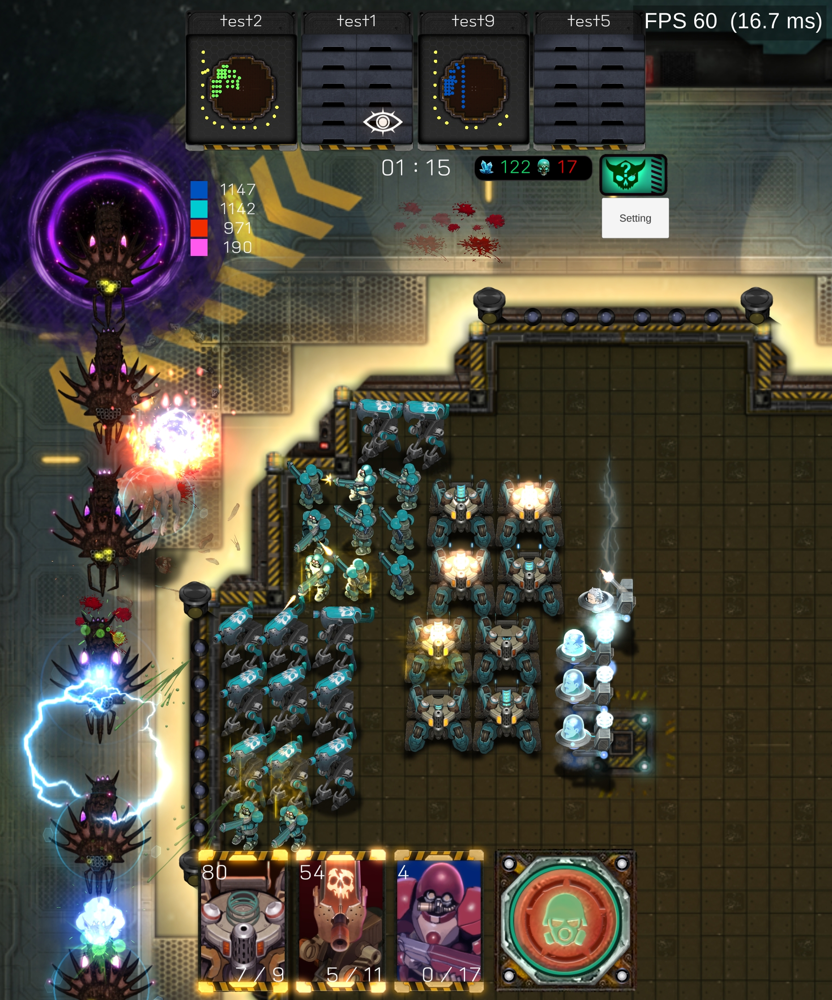

경력 기술서
UE5 기반 MMORPG 프로젝트에서 전투·시스템 전체 구조를 설계하고 구현을 리드했던 경험을 정리했습니다.
레포르 게임즈 · 전투/시스템 기획
Unreal Engine 5 「Project S.E.T」(가칭) MMORPG 개발에 참여하여 전투 및 시스템 기획을 전담했습니다. 개발 초기부터 합류해 기본 시스템 구조를 설계하고, 이후 전투 전반의 품질과 흐름을 책임지는 역할로 확장되었습니다.
플랫폼 : PC / Mobile
장르 : MMORPG
역할 : 전투·시스템 기획
기간 : 2023.09 ~ 2025.03
핵심 담당 영역
- 메인 캐릭터 4개 클래스 전투 설계 및 스킬 데이터 구축
- 보스 패턴, 몬스터 데이터 및 레벨 배치
- 상태이상·어그로·자동 전투·스킬 강화/룬/탈것·비행 시스템
- 애님 몽타주·나이아가라·사운드·BP 디버깅 등 UE5 협업

레포르 게임즈 · UE5 MMORPG 「Project S.E.T」
프로젝트의 전투 방향성과 시스템 구조를 정의하고, 각 파트(애니·VFX·사운드·클라·서버)와 협업하며 실제 게임 플레이로 연결되는 데이터와 로직을 설계했습니다.
전투 기획
- 나이트 / 위자드 / 아처 / 어쎄신 4개 클래스 스킬 및 연출 기획
- 기본 상태 애니메이션 및 전투 루프 설계, 애님 몽타주 세팅
- 보스 몬스터 패턴, 페이즈 설계 및 State Machine 구조 정의
- 대륙 3종 / 던전 4종 몬스터 로코·공격·피격 애니 데이터 작업
- 사거리, 대미지, 타입, 스탯, 이동 속도 등 전투 밸런스 데이터 구축
상태이상 & 스탯 시스템
- 도발 / 암흑 / 은신 / 석화 / 반사 대미지 / 대미지 감소 / 대미지 실드 등 상태이상 구조 설계
- 상태이상 중첩·갱신·유지 로직 및 관계(시전자/대상)별 처리
- 추가 사거리, 상태이상 대상 추가 능력치, 마나 감소, 상태이상 시간 증감 스탯 기획
- 상태이상 조건에 따른 스킬/커맨드 발동 로직 (보유/미보유/스택)
어그로 / 자동 전투 / 스킬 강화
- 대미지·힐·스킬 사용을 기반으로 한 어그로 공식 및 가중치 설계
- 거리, 낮은 HP, 타겟 고수, 어그로 초기화/전이 등 어그로 커맨드 처리 구조
- 스킬 카테고리 기반 자동 전투 로직 및 사용 우선순위/조건(바디 점유 등)
- 스킬 예약 큐 시스템, 스킬 사용 주기(쿨타임과 별도) 설정 및 UI 기획
- 스킬 강화/룬 시스템 – 레벨 업에 따른 커맨드/스탯 변화 및 몽타주 변경
시스템 / UE5 협업
- 탈것·비행 시스템 (소환/장착/컬렉션/합성, 공중 전투 및 Z축 처리)
- 오프라인 플레이 – 로그아웃 시 서버 AI가 캐릭터를 조작하는 구조 및 State Machine 설계
- 채팅 시스템 – 채널별 전파 범위, 레벨 제한, 소모 재화, 공용 변수 테이블 설계
- 애님 노티파이를 통한 이펙트/사운드 트리거, 나이아가라 파라미터 연동
- BP/Visual Studio 디버깅, 중단점·호출 스택을 활용한 이슈 원인 분석 및 재현

프로젝트 RC (가칭) · 시스템/전투 프로토타입
메인 프로젝트 외에, 신규 전투 컨셉과 시스템 아이디어를 검증하기 위한 프로토타입 작업에도 참여했습니다. 반복적인 실험을 통해 “재미가 되는 지점”과 “유지보수가 가능한 구조” 사이의 균형을 고민했습니다.
 

프로토타입 목표
- 기존 전투 시스템의 강점을 유지하면서도 다른 리듬과 템포를 가진 전투 실험
- 스킬 슬롯 구성, 자동 전투 개입 방식, 어그로 동작 방식 변형 등 여러 안 비교
담당 역할
- 핵심 전투 루프 정의 및 시나리오 작성
- 필요 데이터 테이블 설계 및 값 튜닝
- 플레이 테스트 후 이슈/피드백 기록 및 개선 방향 제안